Học máy
Bài 8: Mô hình cây quyết định
Trường ĐH Công nghệ – Đại học Quốc gia Hà Nội
Nội dung
Từ cây đơn đến ensemble: trực giác, cơ chế, và khi nào dùng.
1.
Tổng quan
Trò chơi 20 câu hỏi
Trực giác cho cây quyết định (decision tree): liên tục đặt câu hỏi cho đến khi tìm ra câu trả lời.
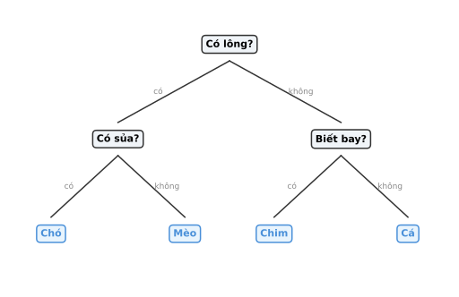
Cơ sở — Phân vùng không gian
Cây quyết định chia không gian đặc trưng thành các vùng, trong mỗi vùng dùng một mô hình hằng số (giá trị trung bình).
Ví dụ: Dự đoán lương cầu thủ (Hitters) từ số năm thi đấu và số cú đánh.
Không gian chia thành 3 vùng \(R_1, R_2, R_3\) — mỗi vùng dự đoán một mức lương khác nhau.
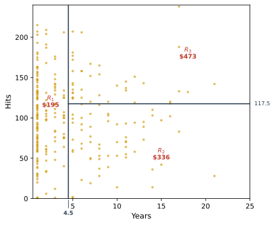
Xây dựng cây hồi quy — Hai bước
- Chia không gian đặc trưng thành \(J\) vùng rời nhau \(R_1, \ldots, R_J\).
- Trong mỗi vùng, dự đoán bằng giá trị trung bình của các quan sát thuộc vùng đó.

Các vùng có thể có hình dạng bất kỳ — nhưng ta chỉ dùng hình hộp (rectangles) vì đơn giản và dễ diễn giải.
Cấu trúc cây quyết định
Cây dễ giải thích và có biểu diễn đồ hoạ trực quan:
- Nút trong (internal node): kiểm tra một đặc trưng
- Nhánh (branch): đúng → trái, sai → phải

Lá (leaf): vùng trong không gian đặc trưng — mỗi lá cho một dự đoán.
Từ cây đến vùng và ngược lại
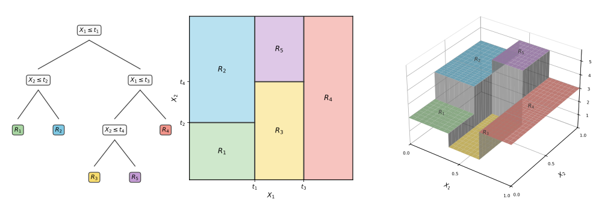
2.
Cây hồi quy
(Regression Trees)
Chiến lược tham lam
Không thể xét hết mọi cây → dùng chiến lược tham lam: tại mỗi bước, chọn \(X_j\) và \(s\) tạo hai vùng.
Lặp lại trên mỗi vùng con → cây lớn dần.
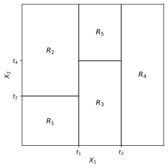
\[ R_1(j,s) = \{X \mid X_j < s\}, \quad R_2(j,s) = \{X \mid X_j \geq s\} \]
Mỗi bước chỉ chọn một biến và một ngưỡng tốt nhất.
Mục tiêu: Cực tiểu RSS
Tại mỗi phép chia, chọn \(j\) và \(s\) sao cho tổng RSS nhỏ nhất:
\[ \sum_{i:\,x_i \in R_1} (y_i - \hat{y}_{R_1})^2 + \sum_{i:\,x_i \in R_2} (y_i - \hat{y}_{R_2})^2 \]
- Dữ liệu hữu hạn → chỉ \(p \times (n-1)\) lựa chọn cho \((j, s)\)
- Cho cây mọc hết rồi cắt tỉa sau thường tốt hơn dừng sớm
Chọn biến và ngưỡng làm RSS sau phép chia nhỏ nhất.
Cắt tỉa cây (Pruning)
Cây phát triển đầy đủ sẽ quá khớp (overfit). Hai cách chống:
- Phát triển cây không hoàn chỉnh (dừng sớm)
- Phát triển cây đầy đủ rồi cắt tỉa
→ Cần tiêu chí phức tạp (complexity criterion) để tìm cây con tốt nhất.
Tiêu chí Cost Complexity
Tương tự Lasso — thêm phạt vào sai số huấn luyện:
\[ \sum_{m=1}^{|T|} \sum_{i:\,x_i \in R_m} (y_i - \hat{y}_{R_m})^2 + \alpha |T| \]
- \(|T|\): số lá của cây con — \(\alpha\) phạt cây có nhiều lá
- \(\alpha = 0\) → cây đầy đủ; \(\alpha\) tăng → cây nhỏ dần — đánh đổi giữa fit tốt và cây đơn giản
Xây dựng cây hồi quy
- Phát triển cây đầy đủ bằng chia đôi đệ quy.
- Cắt tỉa cost complexity: lần lượt gộp nút gây tăng error ít nhất (weakest-link pruning) → dãy cây con tốt nhất theo \(\alpha\).
- Dùng \(K\)-fold CV để chọn \(\alpha\) (hoặc 1-SE rule).
Ví dụ: Cây hồi quy trên Hitters
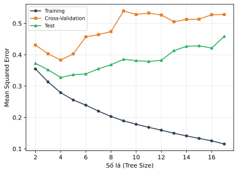
9 đặc trưng, 132 training / 131 test. CV chọn cây khoảng 3 nút lá là tốt nhất.
3.
Cây phân lớp
(Classification Trees)
Cây phân lớp
Giống cây hồi quy nhưng dự đoán trong mỗi vùng là lớp phổ biến nhất (majority vote) — dùng ước lượng xác suất lớp \(\hat{p}_{mk}\) từ dữ liệu mẫu trong mỗi nút.
- \(\hat{p}_{mk}\): tỷ lệ điểm thuộc lớp \(k\) trong vùng \(R_m\)
- Tỷ lệ này hữu ích cho diễn giải (không chỉ nhãn, mà còn độ tin cậy)
Lỗi phân lớp không đủ nhạy
Ý tưởng tự nhiên: dùng lỗi phân lớp thay vì RSS:
\[ E = 1 - \max_k(\hat{p}_{mk}) \]
Các độ đo tạp chất (Impurity Measures)
Gini: \( G = \sum_k \hat{p}_{mk}(1 - \hat{p}_{mk}) \)
Entropy: \( D = -\sum_k \hat{p}_{mk} \log \hat{p}_{mk} \)
Nguyên tắc: Gini / entropy để chia; lỗi phân lớp để đánh giá.
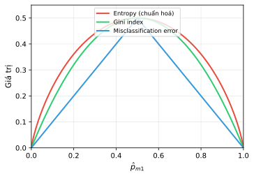
Ví dụ: Cây phân lớp trên Heart
Tập dữ liệu Heart:
- 303 bệnh nhân đau ngực
- Biến mục tiêu HD: bệnh tim (Yes/No)
- 13 đặc trưng: Age, Sex, Chol, ...
- CV chọn cây có 6 nút
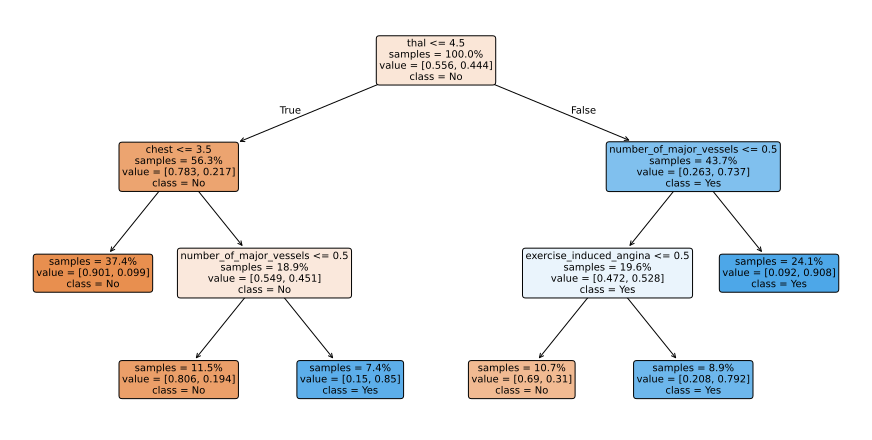
Cây chưa cắt tỉa — Heart
- Tại sao tiếp tục chia nút? Vì tăng độ thuần nhất (purity).
- Chia nút không giảm lỗi phân lớp, nhưng giảm Gini / cross-entropy.
- Kết quả: cây quá phức tạp, dễ overfitting.
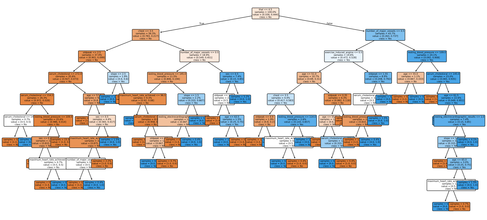
Chọn kích thước cây — Heart
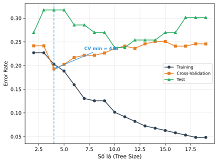
CV chọn cây khoảng 6 nút
Chia biến phân loại
Biến phân loại với \(q\) giá trị không thứ tự cho phép \(2^{q-1} - 1\) cách chia — rất tốn kém.
Thủ thuật cho bài toán 2 lớp (0–1):
- Sắp xếp các giá trị của biến theo tỷ lệ thuộc lớp 1
- Chia như biến liên tục (ordered)
- Tối ưu cả Gini và cross-entropy
Cũng áp dụng khi biến mục tiêu là liên tục — sắp xếp theo trung bình.
Giá trị thiếu (Missing Values)
Có thể điền giá trị thiếu bằng trung bình — nhưng cây có cách tốt hơn:
- Biến phân loại: tạo thêm một mức "missing"
- Biến liên tục: dùng biến thay thế (surrogate variables):
- Chọn biến chính (primary) và điểm chia như thường
- Tìm biến khác mà phép chia bắt chước biến chính tốt nhất
- Khi giá trị chính bị thiếu → dùng surrogate đầu tiên có sẵn
Các biến càng tương quan cao → surrogate càng hiệu quả.
4.
Ưu nhược điểm
Cây vs. Hồi quy tuyến tính
Hai giả định khác nhau về thế giới:
Hồi quy tuyến tính
\(f(X) = \beta_0 + \sum_{j=1}^{p} \beta_j X_j\)
Thế giới tuyến tính toàn cục
Cây quyết định
\(f(X) = \beta_0 + \sum_{m=1}^{M} c_m \mathbb{I}(X \in R_m)\)
Thế giới hằng số theo vùng
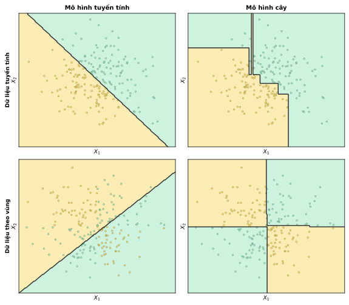
Dữ liệu tuyến tính → mô hình tuyến tính tốt hơn; dữ liệu vùng → cây tốt hơn
Ưu và nhược điểm của cây
Ưu điểm
- Dễ giải thích cho người không chuyên
- Mô phỏng cách ra quyết định của con người
- Biểu diễn đồ hoạ trực quan
- Xử lý biến phân loại không cần dummy
- Xử lý giá trị thiếu một cách tự nhiên
Nhược điểm
- Độ chính xác thường kém hơn các mô hình khác
- Không robust — thay đổi nhỏ trong dữ liệu có thể thay đổi cây hoàn toàn
5.
Phương pháp Ensemble
(Ensemble Methods)
Phương pháp Ensemble
Kết hợp nhiều mô hình và gộp dự đoán — như hỏi ý kiến nhiều chuyên gia ("trí tuệ đám đông").
- Gộp nhiều dự đoán thường giảm phương sai
Ba phương pháp chính:
- Bagging: kết hợp cây với bootstrap
- Random Forests: giảm tương quan giữa các cây bagged
- Boosting: xây cây tuần tự, tập trung vào vùng yếu
Tại sao cần Ensemble?
Nhìn lại nhược điểm của cây đơn:
Cây đơn
- Bias thấp — có thể fit dữ liệu phức tạp
- Phương sai cao — thay đổi nhỏ trong dữ liệu → cây hoàn toàn khác
- Dễ hiểu nhưng thường kém chính xác
Ensemble
- Thường giữ bias thấp — vẫn dùng cây làm base learner
- Giảm phương sai — kết hợp nhiều cây khác nhau
- Đánh đổi: mất khả năng diễn giải
Trí tuệ đám đông
Ví dụ: bỏ phiếu giải Oscar giả lập
- 50 thành viên, 10 hạng mục, 4 đề cử mỗi hạng mục
- 15 người có hiểu biết (đúng với xác suất \(p\)); 35 người chọn ngẫu nhiên (\(1/4\))
- Kết quả đồng thuận (consensus) thường tốt hơn cá nhân
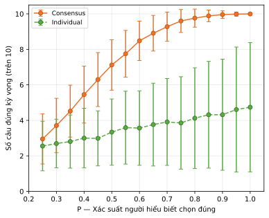
Bagging (Bootstrap Aggregating)
Áp dụng bootstrap để giảm phương sai cho cây quyết định:
- Tạo \(B\) tập huấn luyện bằng bootstrap
- Xây cây đầy đủ (chưa cắt tỉa) trên mỗi tập: \(\hat{f}^{*b}(x)\)
- Trung bình dự đoán: \(\hat{f}_{\text{bag}}(x) = \frac{1}{B}\sum_{b=1}^{B} \hat{f}^{*b}(x)\)
Hồi quy → trung bình; phân lớp → bầu cử đa số (majority vote).
Vấn đề của Bagging: tương quan
Các mẫu bootstrap chồng lắp nhiều → các cây tương quan cao. Tại sao đó là vấn đề?
→ Muốn giảm phương sai thật sự, phải giảm \(\rho\).
Random Forests: giảm tương quan
Tại mỗi phép chia, chỉ xét \(m\) đặc trưng ngẫu nhiên thay vì toàn bộ \(p\):
- Phân lớp: \(m = \sqrt{p}\) | Hồi quy: \(m = p/3\)
- Các cây dùng đặc trưng khác nhau → giảm tương quan
- Ví dụ: nếu có 1 biến rất mạnh, bagging luôn chia theo biến đó → cây giống nhau. RF chỉ dùng biến đó trong \(m/p\) lần chia.
So sánh Bagging vs. Random Forests — Heart
- Dùng mẫu out-of-bag (OOB, ~1/3) để ước lượng test error miễn phí
- Bagging không overfit khi \(B\) tăng → chọn \(B\) đủ lớn
- RF thường tốt hơn Bagging nhờ giảm tương quan giữa cây
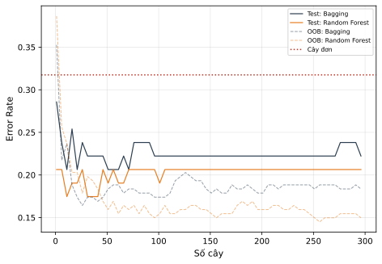
Chọn giá trị \(m\)
\(m\) nhỏ phù hợp khi có nhiều biến tương quan. \(m = p\) tương đương bagging.
Ví dụ: 4718 gen, 15 lớp ung thư — RF với \(m = \sqrt{p}\) tốt nhất.
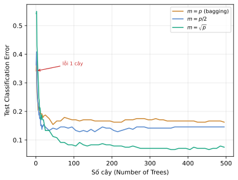
Độ quan trọng biến (Variable Importance)
Ensemble nhiều cây khó diễn giải → dùng độ quan trọng biến thay thế.
Biến nào giảm sai số (RSS hoặc Gini) nhiều nhất mỗi khi được dùng để chia → quan trọng nhất. Trung bình trên tất cả cây trong ensemble.
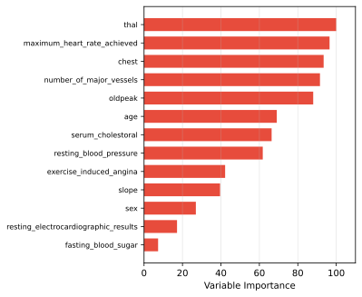
Thal và Ca quan trọng nhất trên Heart
Boosting
Khác bagging/RF: các cây được xây tuần tự, mỗi cây tập trung vào vùng mà mô hình hiện tại yếu.
- Nền tảng lý thuyết vững chắc (AdaBoost)
- Cây nhỏ (stumps / shallow trees)
- Học chậm — nhiều cây nhỏ tốt hơn ít cây lớn
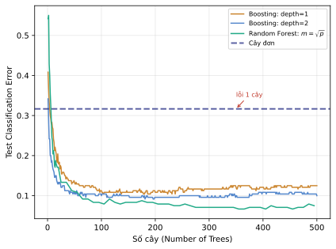
Boosting với cây nông đã đạt hiệu năng cạnh tranh với RF
Boosting cho cây hồi quy
- Đặt \(\hat{f}(x) = 0\) và phần dư \(r_i = y_i\) cho mọi \(i\).
- Với \(b = 1, 2, \ldots, B\):
- Fit cây \(\hat{f}^b\) có \(d\) phép chia (\(d+1\) lá) trên \((\mathbf{X}, \mathbf{r})\)
- Cập nhật: \(\hat{f}(x) \leftarrow \hat{f}(x) + \lambda \hat{f}^b(x)\)
- Cập nhật phần dư: \(r_i \leftarrow r_i - \lambda \hat{f}^b(x_i)\)
- Mô hình cuối: \(\hat{f}(x) = \sum_{b=1}^{B} \lambda \hat{f}^b(x)\)
Tham số của Boosting
Số cây \(B\)
- Boosting có thể overfit (khác bagging)
- Dùng CV để chọn
Shrinkage \(\lambda\)
- Thường 0.01 hoặc 0.001
- \(\lambda\) nhỏ → cần \(B\) lớn
Số chia \(d\)
- \(d=1\) (stumps) thường tốt
- \(d\) kiểm soát bậc tương tác
Bagging vs. Boosting — Dữ liệu giả lập
\(p=5\) đặc trưng, 2 lớp, biên quyết định \(x_1 + x_2 = 1\). Bagging stumps: tất cả cây chia gần giữa → trung bình không cải thiện. Boosting tốt hơn rõ rệt.
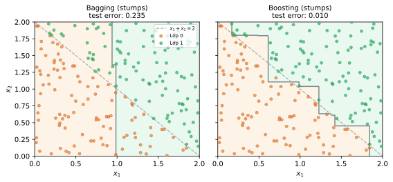
Tổng kết — Khi nào dùng gì?
| Cây đơn | Random Forest | Boosting | |
|---|---|---|---|
| Khi nào dùng | Cần diễn giải, dữ liệu nhỏ | Mặc định tốt, ít cần tuning | Ưu tiên hiệu năng, chấp nhận tuning |
| Ưu điểm | Dễ hiểu, trực quan | Robust, song song hoá | Thường cho chính xác cao |
| Nhược điểm | Phương sai cao | Khó diễn giải | Dễ overfit, chậm |
| Tuning | Pruning (\(\alpha\)) | Ít (\(m\), \(B\)) | Nhiều (\(\lambda\), \(d\), \(B\)) |
Tài liệu tham khảo
- ISLR, Chương 8.
- ESL, Chương 9–10.
- Muandet & Vreeken, lecture slides.